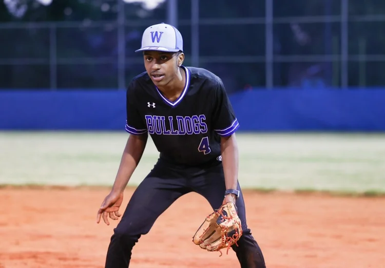

Class of 2021
Nahzire West
Booker T. Washington HS
Four-year letterman in baseball, named Captain all four years. Dual enrollment, L.E.A.D. Ambassador, HOSA Debate Team, Student Government. Launched his own apparel line — already a sought-after product among his peers.
Now at Georgia State · Business Marketing